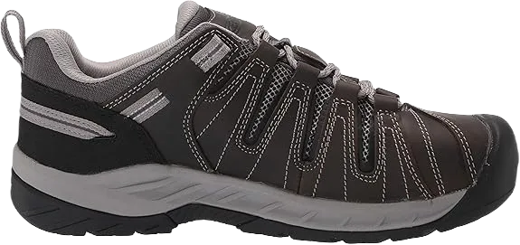
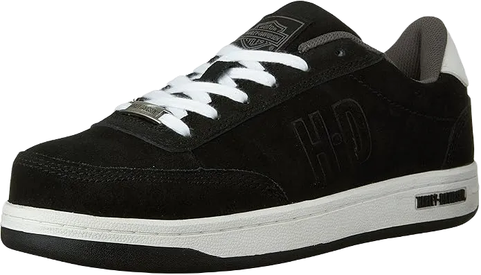
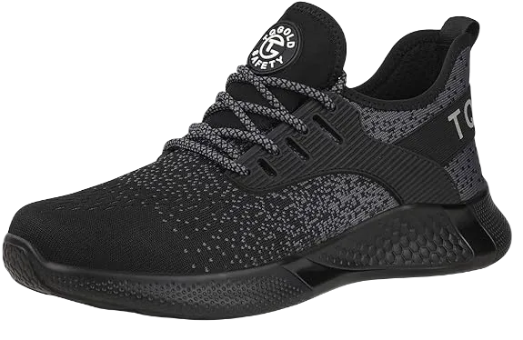

Top 8 Best Ultra Lightweight Safety Work Shoes 2024
Let’s discuss shoes that are ideal for anyone engaged in hard work or heavy-duty activities. These shoes boast features designed to provide optimal comfort and support, ensuring you achieve the best results during use. They are lightweight while offering excellent protection for your feet. Before making a purchase, it’s essential to consider factors such as the materials used and the intended purpose of the shoes, as these elements will influence both comfort and style.
While there are many brands available, not all shoes meet the necessary criteria for quality and functionality. However, we will focus on those that excel in providing protection against elements like water, keeping your feet dry and comfortable. These shoes are designed to be enjoyed, and once you wear them, you’ll appreciate their exceptional quality and safety features, making them a great choice for anyone looking for reliable footwear for various activities.
-
#1
New balance men’s MId627v2
.webp)
When discussing shoes, it’s essential to highlight their features, particularly how their lightweight design sets them apart from the competition, offering an impressive range of prices and unparalleled comfort. These shoes are widely used and thoughtfully designed to ensure that you receive a superior product that enhances your performance and overall experience while wearing them.
Their complete design focuses on lightweight functionality, making them incredibly comfortable and well-balanced for daily wear. This versatility is a significant reason why many people are eager to purchase these shoes, and we strive to keep them in stock to meet demand.
Beyond just their attractive features, these shoes provide exceptional comfort, balance, and grip—qualities that are crucial for anyone using them in various activities. They are crafted to meet the diverse needs of wearers, ensuring that all requirements for safety and performance are met. -
#2
Timberland pro men’s powertrain
.webp)
Shoes play a crucial role in providing comfort and functionality, making it impossible to overlook their impact on our daily lives. It's clear that footwear is essential for everyone, and many people prefer to wear sneakers at work to enjoy the benefits they offer, resulting in improved performance and comfort. These shoes not only support fitness levels but also provide more comfort compared to other options with similar features.
These shoes are designed for all-day wear, offering a stylish appearance and a wide range of colors, which makes them suitable for various settings and activities. When it comes to lightweight shoes, they are especially beneficial for those engaged in physically demanding tasks, as they provide the necessary support and safety for your toes.
The toe area is particularly important, and it's essential to carefully assess how well these shoes protect it. Ensuring that the toe section is secure and able to withstand daily wear is crucial for overall foot safety and comfort. -
#3
Sketchers for work 77055 cankton athletic
.webp)
When discussing shoes, it becomes clear how common and functional they are, providing an impressive range of options and a wide array of colors. These shoes offer a good level of resistance, but some may fall short in terms of grip on the floor due to a lower-quality outsole.
However, many of these shoes feature elements that not only enhance flexibility but also help keep your feet comfortable and protected. They are designed to minimize the risk of injuries and keep moisture away, ensuring that your feet remain dry and healthy throughout the day.
Ultimately, the best shoes should combine aesthetic appeal with functionality, offering support and protection while allowing for a natural range of motion. This balance is essential for maintaining foot health and comfort, especially during extended wear. -
#4
Keen utility men’s flint II low
When purchasing shoes, it’s often possible to find options that come with a warranty, indicating a certain level of quality and reliability. These particular shoes have features that make them ideal for anyone looking for comfort and performance. If you decide to try them, we’re confident you’ll love them, as they are designed for individuals striving to achieve their best while ensuring their feet feel safe and supported during work.
These shoes are built for durability, featuring a rubber sole that enhances comfort and flexibility. Additionally, they are lightweight, preventing discomfort or strain that heavier shoes might cause. You’ll find that these shoes provide a secure fit, making them suitable for casual wear as well, which adds to their versatility. They are designed with unique features that set them apart from similar options, prioritizing your comfort and well-being.
In summary, these shoes are an excellent choice for anyone who experiences daily stress and heavy-duty tasks. They provide the relaxation and support necessary for hard-working individuals, allowing for ease of movement and stability throughout the day -
#5
Caterpillar men’s brode steel
.webp)
These shoes come equipped with a variety of safety features designed to ensure you receive the highest level of protection and performance. They are built for durability and flexibility, effectively addressing a range of issues and concerns that wearers may encounter.
We understand how beneficial these shoes can be, as they incorporate materials that enhance comfort and provide exceptional durability. Additionally, their water-resistant properties make them suitable for various conditions and activities. These shoes excel in delivering precise support and comfort, outperforming many other options available, and they offer a fantastic experience that users are sure to appreciate.
Not only are these shoes functional, but they also make a stylish addition to your wardrobe, making them suitable for both casual outings and parties. You can enjoy a trendy look without sacrificing comfort, proving that practicality and style can go hand in hand. -
#6
Reebok work men’s soyay RB 1910
.webp)
When discussing shoes, it's essential to consider the features and qualities they offer. These shoes are designed to provide excellent comfort while also incorporating water resistance, which helps prevent slips and falls. The shock-absorbing outsoles are particularly beneficial, delivering effective solutions for various situations.
Wearing these shoes offers a unique experience, enhancing your safety and protecting you from potential hazards. Additionally, they are easy to clean, allowing you to maintain their appearance without hassle and effectively addressing any challenges you might encounter.
Another advantage of these shoes is their removable components, which add versatility and convenience. The durable construction ensures they perform well in various settings, while the thoughtfully designed lining enhances their aesthetic appeal, giving you a stylish yet functional option for your footwear needs. -
#7
Harley davidson men’s static steel
When searching for the perfect pair of shoes, it's important to consider various designs and features to ensure you find the right fit. We offer shoes that excel in functionality and comfort, designed to address a wide range of needs. These shoes are so comfortable that you can wear them effortlessly, whether for everyday activities or even bike racing, thanks to their durable construction.
We understand the importance of durability in shoes, and our models are built to withstand various challenges. Their flexibility and water-resistant capabilities make them ideal for outdoor wear. In addition to these qualities, our shoes feature well-designed lines that highlight their safety and performance, providing a reliable option for anyone who chooses to wear them. We are confident that once you try these shoes, you’ll appreciate their versatility and comfort for everyday tasks.
After purchasing these shoes, you'll find them to be a favorite for daily wear and various activities. Their lightweight design adds an extra layer of comfort, making them suitable for all your needs. Whether you're tackling chores or enjoying outdoor adventures, these shoes are sure to enhance your experience and support your lifestyle. -
#8
TQGold work safety shoes steel toe
The shoes we are discussing offer exceptional benefits and comfort, ensuring that your toes remain protected thanks to their well-designed upper layer. These shoes are highly sought after, especially by women who appreciate the results they provide after wearing them.
We recognize that these shoes excel in delivering impressive durability, making them easy to maintain and clean. They are widely recommended for their ability to keep your feet feeling dry and alleviate various pains and injuries that women may experience during daily activities.
Understanding that women often engage in high-risk jobs, these shoes provide the necessary support and stability. They come in a fantastic range of colors and designs, offering both comfort and style compared to other footwear options. Whether worn at work or during social gatherings, these shoes enhance the overall look while being functional. Available in various styles and colors, they are perfect for outdoor activities and can easily accommodate those with ankle pain or injuries, making them both stylish and practical.